Écologie des communautés : les espèces de trois milieux
Les bois, les haies et les cultures abritent-ils les mêmes carabes ? Du tableau d'espèces aux courbes de raréfaction, un NMDS sur Bray-Curtis, une PERMANOVA et son test de dispersion, les espèces indicatrices, et ce qu'il faut écrire dans un article.
Les données sont simulées. Aucun carabe n'a été piégé : le tableau a été fabriqué par le script communautes.R, avec une graine fixe, pour ce tutoriel. Les espèces et leurs milieux sont réels ; leurs effectifs sont inventés à partir d'une prise moyenne de chaque espèce dans chaque milieu, les haies recevant une part des espèces du bois et de celles des cultures.
La question et les données
Les carabes se piègent au sol, dans des pots enterrés au ras de la terre, laissés ouverts trois semaines en mai. Dans un paysage agricole, 12 pièges ont été posés en bois, 12 le long de haies et 12 dans des cultures. Les trois milieux abritent-ils les mêmes espèces, autant d'espèces, et quelles espèces caractérisent chacun d'eux ?
Téléchargez carabes.csv (36 lignes, une par piège) :
| Colonne | Contenu |
|---|---|
| piege | le nom de la ligne : P01 à P12 en bois, P13 à P24 le long des haies, P25 à P36 dans les cultures |
| habitat | bois, haie ou culture |
| Abax parallelepipedus … Trechus quadristriatus | le nombre d'individus de chaque espèce pris dans le piège (26 colonnes, par ordre alphabétique) |
Ouvrez-le avec Fichier › Ouvrir (Ctrl+O) : le projet compte 36 observations et 27 variables (la première colonne nomme les observations).
1. Quelle analyse ?
Modèle › Quelle analyse ? : cochez Beaucoup d'espèces à la fois. Nuée propose les 26 espèces
comme réponse (des colonnes d'entiers, positifs ou nuls, avec des zéros) et habitat comme variable
explicative. Pour voir comment la composition change entre les groupes, il conseille une
PERMANOVA, avec un NMDS et les espèces indicatrices parmi les autres possibilités.

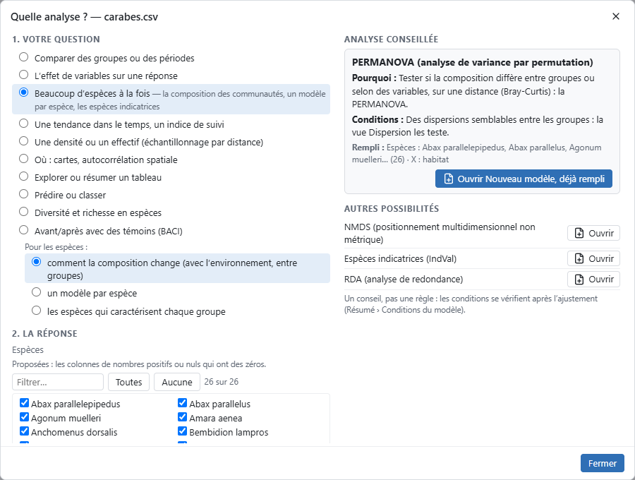

Fermez-la pour l'instant : la richesse d'abord.
2. Combien d'espèces ? La raréfaction
Un piège qui prend plus de carabes trouve plus d'espèces : les nombres d'espèces de deux pièges ne
se comparent qu'à nombre d'individus égal. Graphiques › Raréfaction et accumulation des espèces
(aussi sous le projet dans l'explorateur) : Espèces de Abax parallelepipedus à
Trechus quadristriatus, Prendre la plage, puis Par groupe : habitat.

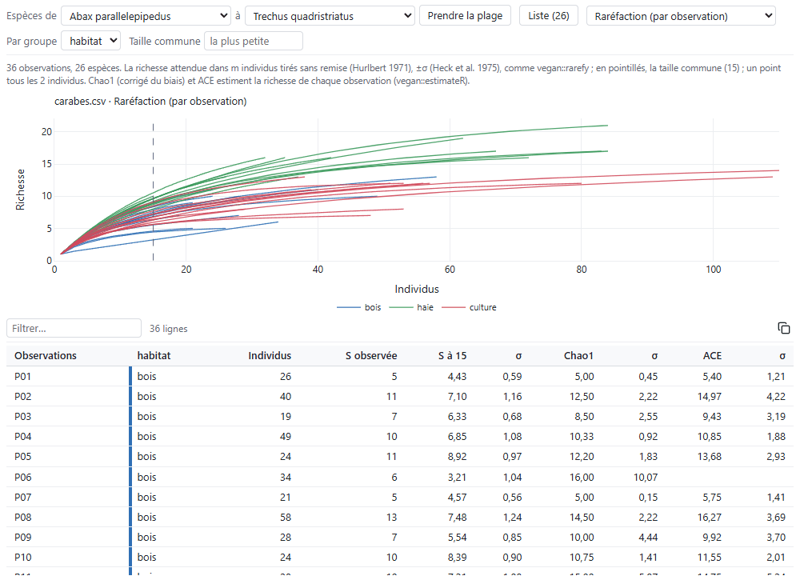

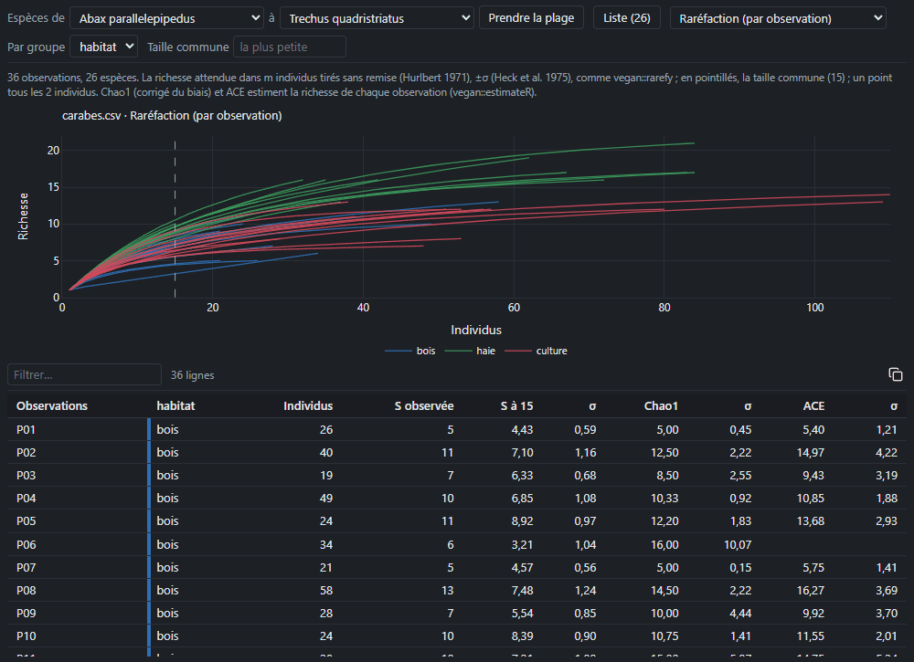
Chaque courbe est le nombre d'espèces attendu dans m individus tirés de la prise du piège (Hurlbert, 1971). Lisez-les au même nombre d'individus : les pointillés, 15, sont la plus petite prise (le piège P14). À 15 individus, les pièges des haies comptent 8,02 à 10,57 espèces, ceux du bois 3,21 à 8,92 et ceux des cultures 5,60 à 9,13, alors que les cultures prennent le plus de carabes (29 à 110 par piège). Le tableau donne la richesse de chaque piège à 15 (S à 15), et deux estimations de ce qu'il compterait avec une prise bien plus grande, Chao1 et ACE. Elles ne valent que ce que vaut la prise : les 34 carabes de P06 sont 29 Abax parallelepipedus et cinq espèces vues une fois chacune ; Chao1 donne alors 16 ± 10,07, et ACE ne se calcule pas.
Choisissez Accumulation (sur les observations) dans la même vue :

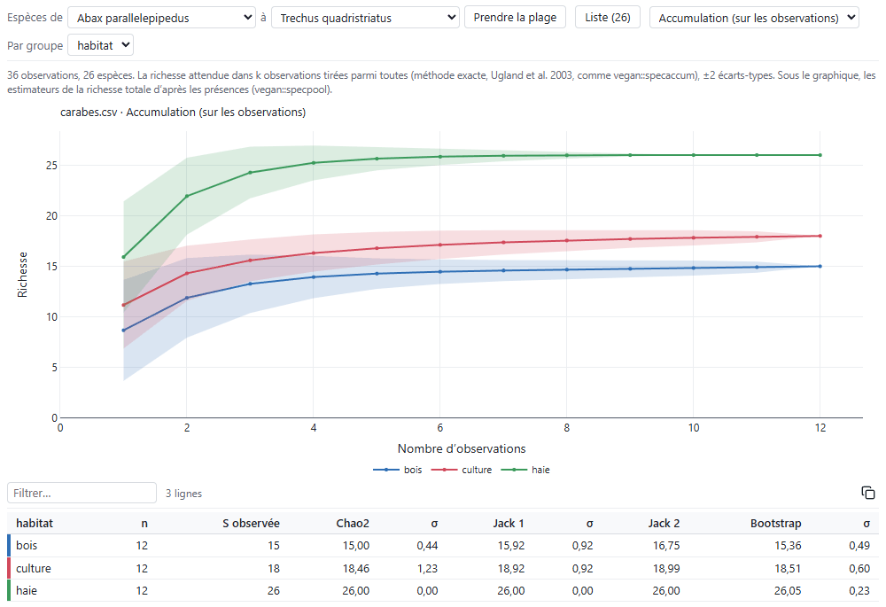

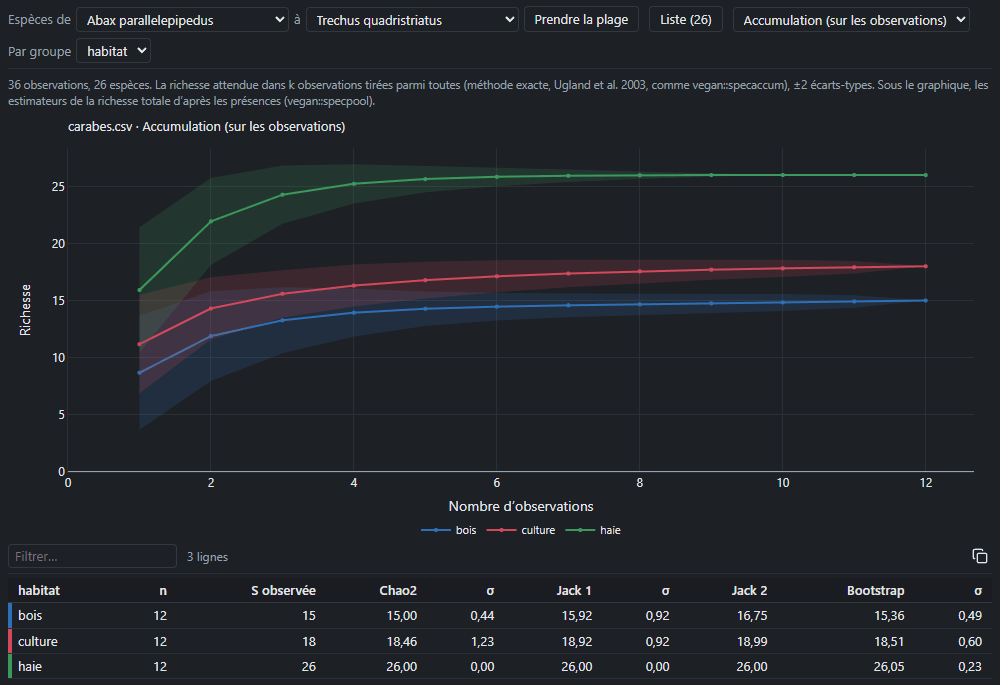
Chaque courbe est le nombre d'espèces attendu dans k pièges du milieu (méthode exacte, Ugland et al., 2003). Les courbes s'aplatissent : douze pièges ont trouvé presque toutes les espèces de leur milieu. Chao2, les jackknifes et le bootstrap estiment la richesse totale d'après les espèces vues dans un ou deux pièges seulement : 18 espèces observées dans les cultures, 18,46 selon Chao2 et 18,99 selon le jackknife d'ordre 2 ; 15 dans le bois, jusqu'à 16,75 ; et les 26 le long des haies, qui partagent les espèces du bois et celles des cultures.
3. Le NMDS : qui ressemble à qui
Une ordination place les pièges sur un plan, proches quand leurs espèces se ressemblent. Revenez à
Modèle › Quelle analyse ? et ouvrez le NMDS parmi les autres possibilités : Nouveau modèle
s'ouvre avec les espèces en Y et habitat en X, à ajuster ensuite sur le plan.
Dans l'onglet Général, gardez la distance de Bray-Curtis et choisissez la Transformation : racine carrée puis Wisconsin (comme metaMDS).
- La dissimilarité de Bray-Curtis entre deux pièges vaut 0 quand ils ont les mêmes espèces dans les mêmes nombres, et 1 quand ils n'en partagent aucune.
- La racine carrée affaiblit les espèces les plus abondantes (Pterostichus melanarius, 275 carabes en tout), qui sinon feraient seules la dissimilarité ; la double standardisation de Wisconsin donne ensuite le même maximum à chaque espèce, et le même total à chaque piège : un piège qui a pris deux fois plus de carabes, parce qu'il était mieux enterré, ne compte pas double. C'est ce que fait par défaut la fonction metaMDS de vegan pour des comptages.


Cliquez sur Ajuster. Le NMDS (Kruskal, 1964) cherche les positions dont les distances respectent l'ordre des dissimilarités, depuis la configuration de la PCoA et 20 départs au hasard ; le résumé donne son stress, 0,1347 : sous 0,1 l'ordre est bien respecté, au-delà de 0,2 le plan se lit avec prudence. Retrouvée 1 : un autre départ a trouvé la même configuration, signe que ce n'est pas un minimum local (avec 0, augmentez les départs au hasard).
Les vues du modèle s'ouvrent avec lui (sinon, double-cliquez-les sous le modèle dans
l'explorateur). Dans Ordination, Couleur : habitat ; décochez Espèces (Y) pour voir les
pièges :

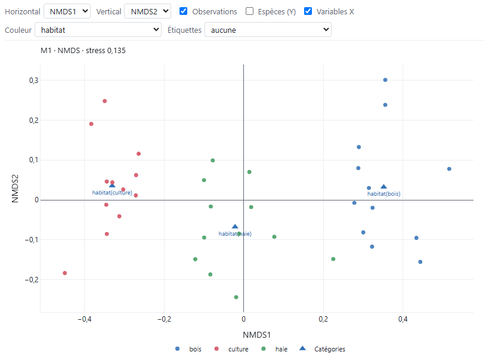

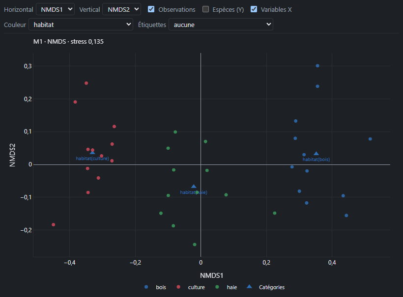
Les pièges du bois sont à droite, ceux des cultures à gauche, ceux des haies entre les deux et plus
dispersés : une haie le long d'un bois abrite des carabes du bois, une haie entre deux champs des
carabes des champs. Seules les positions les unes par rapport aux autres se lisent : les axes n'ont
pas d'unité, et un NMDS n'a pas de part de variance par axe. Les triangles sont le centre de chaque
milieu, ajusté après coup (la vue Variables ajustées) : la part des positions des pièges sur
le plan qu'explique habitat est R² = 0,8062, p = 0,0010 par 999 permutations. Cochez
Espèces (Y) : chaque espèce se place à la moyenne des pièges qui l'ont prise,
Abax parallelepipedus parmi ceux du bois.

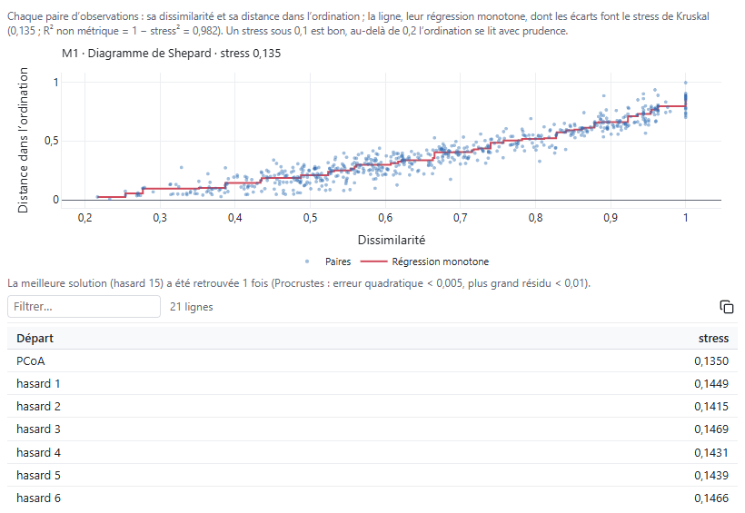

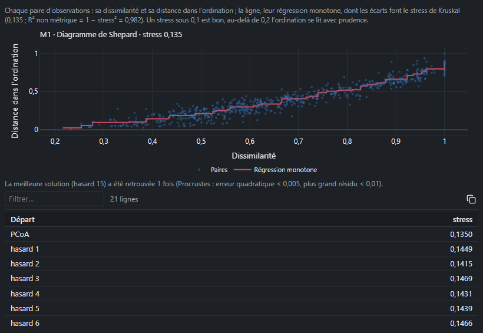
Le diagramme de Shepard vérifie l'ordination : chaque paire de pièges, sa dissimilarité en abscisse, sa distance sur le plan en ordonnée. Elles montent ensemble ; le stress mesure leurs écarts à la ligne en escalier (R² non métrique = 1 − stress² = 0,982).
4. La PERMANOVA et son test de dispersion
Le NMDS montre ; la PERMANOVA teste. Dans Modèle › Quelle analyse ?, ouvrez l'analyse conseillée, la PERMANOVA. Dans l'onglet Général, choisissez la même transformation que pour le NMDS, racine carrée puis Wisconsin, pour que le test porte sur les distances que montre le plan. Cliquez sur Ajuster.

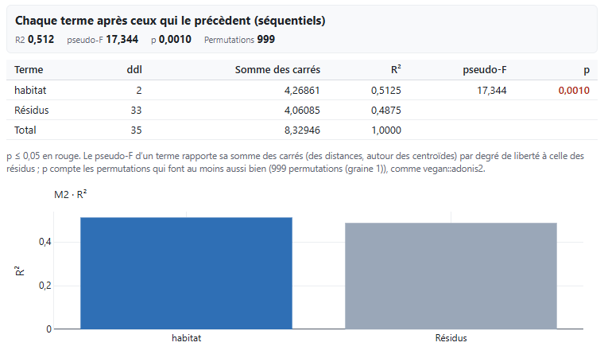

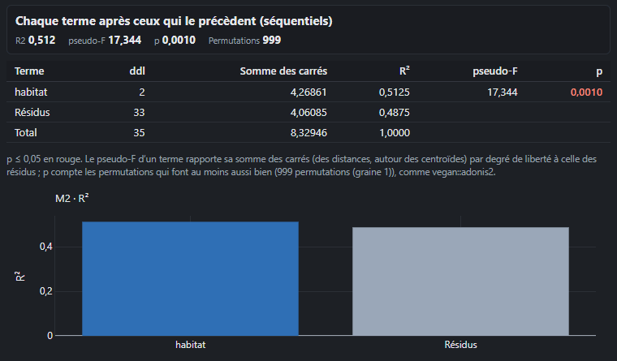
La PERMANOVA (Anderson, 2001) partage la variation des dissimilarités comme une analyse de variance partage celle d'une variable : au sein des milieux, et entre leurs centres. R² = 0,512 : l'habitat explique la moitié de la variation de composition entre les pièges. Le pseudo-F (17,344) compare les deux parts, et son p vient de 999 permutations des pièges entre les milieux : aucune n'a donné un F aussi grand, d'où p = 0,0010, le plus petit p que 999 permutations puissent donner.
Une PERMANOVA teste les centres, mais elle réagit aussi à la dispersion des groupes : un milieu dont les pièges sont plus éparpillés peut faire paraître une différence de centres. La vue Dispersion multivariée teste cette dispersion (Anderson, 2006) :

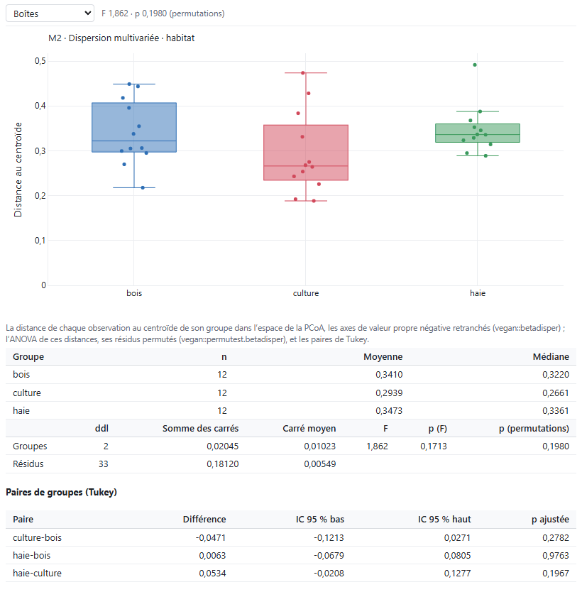

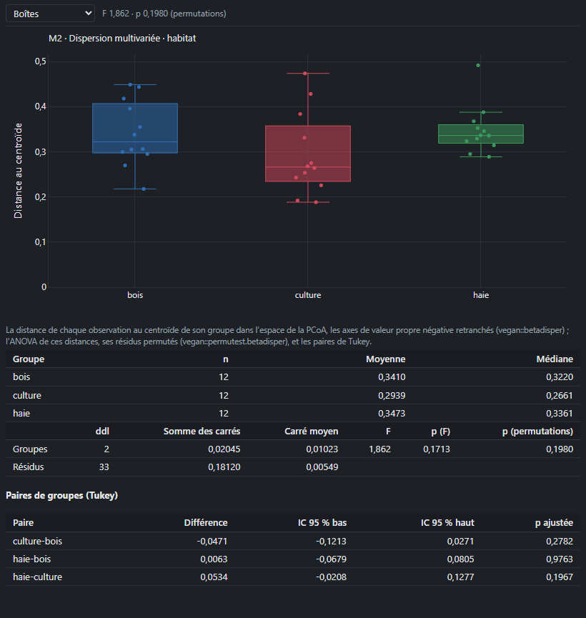
Les pièges se tiennent en moyenne à 0,2939 du centre de leur milieu dans les cultures, 0,3473 le long des haies et 0,3410 dans le bois. Ces dispersions ne diffèrent pas : F = 1,862, p = 0,1980 par permutations, et aucune paire du test de Tukey. La différence de la PERMANOVA est une différence de composition, pas de dispersion. Si ce test avait été significatif, la table de la PERMANOVA et cette vue l'auraient dit en rouge : le résultat se serait alors lu avec prudence, avec le plan du NMDS.
5. Les espèces indicatrices
Dans Modèle › Quelle analyse ?, ouvrez les Espèces indicatrices (IndVal) : les espèces en Y,
habitat comme classe. Cliquez sur Ajuster, puis la vue Espèces indicatrices :

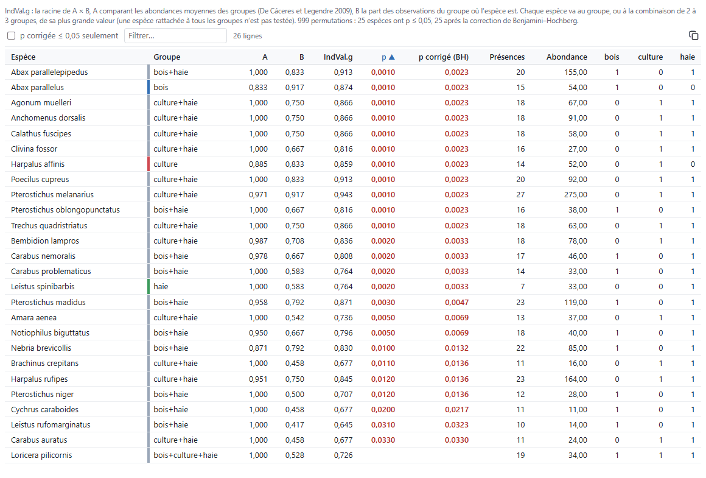

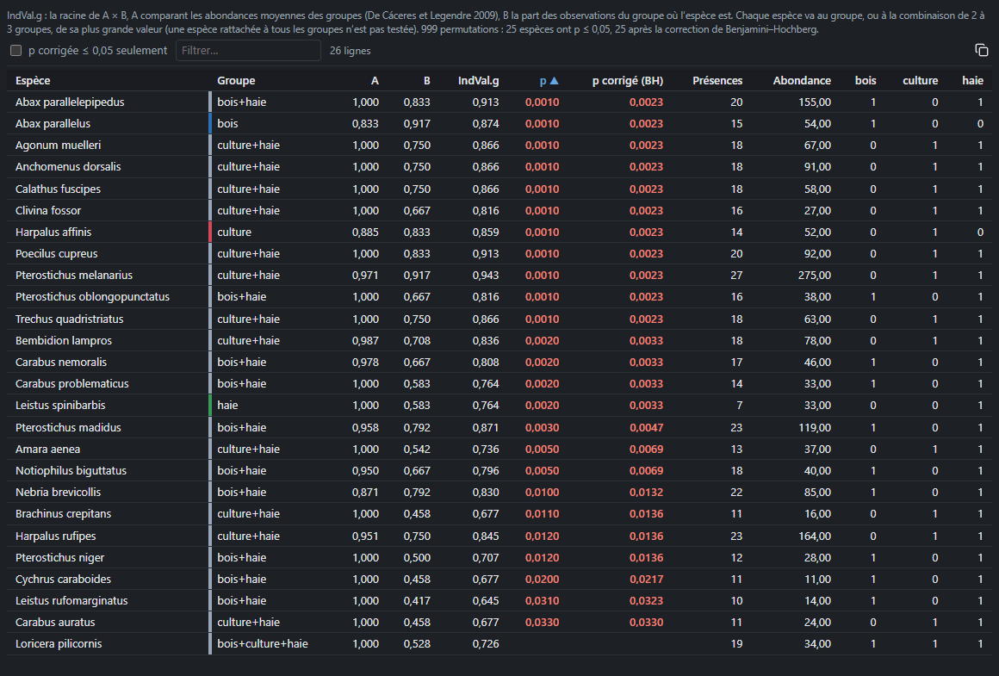
Pour chaque espèce et chaque milieu, A (la spécificité) est la part de son abondance dans ce milieu, les milieux comparés à égalité, et B (la fidélité) la part des pièges du milieu où on la trouve. La valeur indicatrice IndVal.g est la racine carrée de A × B (De Cáceres et Legendre, 2009) ; chaque espèce va au milieu, ou à la combinaison de milieux, de sa plus grande valeur, testée par 999 permutations, le p corrigé sur l'ensemble des espèces.
- Abax parallelus indique le bois : A = 0,833, B = 0,917 ; Harpalus affinis les cultures ; Leistus spinibarbis les haies (A = 1,000 : elle n'a été prise nulle part ailleurs, B = 0,583 : dans 7 de leurs 12 pièges).
- La plupart des espèces vont à une combinaison de deux milieux : Abax parallelepipedus à bois+haie (les milieux boisés), Pterostichus melanarius à culture+haie (A = 0,971, B = 0,917, les terres ouvertes et leurs bordures). Les haies partagent leurs espèces avec leurs deux voisins.
- Loricera pilicornis est dans les trois milieux : une espèce de tous les groupes n'est pas testée.
25 espèces ont un p corrigé ≤ 0,05. Pour donner à chaque espèce un seul milieu, choisissez Combinaisons de groupes : les groupes seuls dans Nouveau modèle.
6. Les textes des méthodes et des résultats
Choisissez la PERMANOVA dans l'explorateur, puis Modèle › Texte pour la section Méthodes :

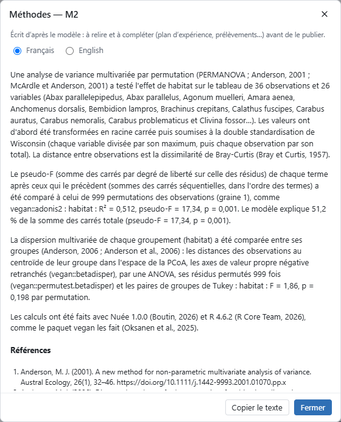

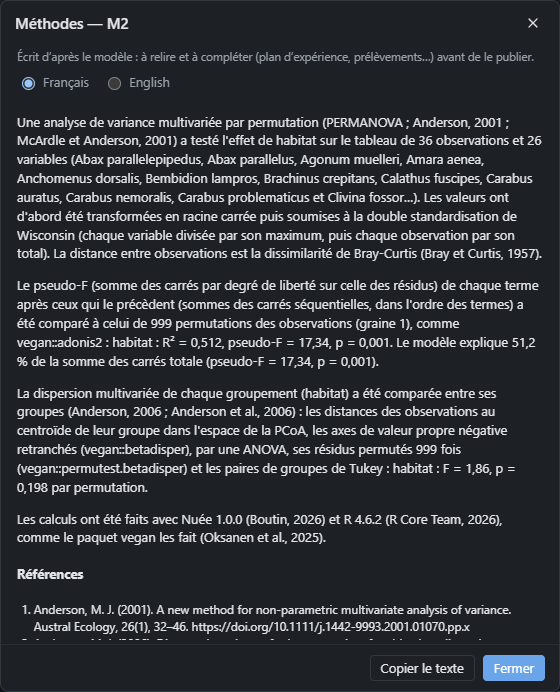
Il dit, entre autres :
Les valeurs ont d'abord été transformées en racine carrée puis soumises à la double standardisation de Wisconsin (chaque variable divisée par son maximum, puis chaque observation par son total). La distance entre observations est la dissimilarité de Bray-Curtis (Bray et Curtis, 1957).
et donne les résultats avec le test :
habitat : R² = 0,512, pseudo-F = 17,34, p = 0,001. […] habitat : F = 1,86, p = 0,198 par permutation.
Le NMDS et les espèces indicatrices ont le leur ; chacun donne la version de R et de Nuée, et les références. Complétez-les avec ce que les modèles ne savent pas : les pièges, leurs dates, la détermination. Pour ces analyses, le texte des résultats, sous celui des méthodes, est une ligne de chiffres (Résultats de M2 (PERMANOVA) : R2 0,51 · p 0,001) ; le paragraphe de l'article s'écrit d'après les vues, par exemple :
Les peuplements différaient entre les milieux (PERMANOVA sur les dissimilarités de Bray-Curtis : R² = 0,51, pseudo-F = 17,3, p = 0,001), sans différence de dispersion multivariée (F = 1,86, p = 0,20). Dans le NMDS (stress = 0,135), les pièges des haies se plaçaient entre ceux du bois et ceux des cultures. À 15 individus, les pièges des haies comptaient 8,0 à 10,6 espèces, contre 3,2 à 8,9 dans le bois et 5,6 à 9,1 dans les cultures. Vingt-cinq des 26 espèces étaient indicatrices d'un milieu ou d'une paire de milieux (IndVal.g, p corrigé ≤ 0,05).
Pour aller plus loin
- Permuter à l'intérieur de (Nouveau modèle, onglet Général) garde les permutations à l'intérieur de groupes : des pièges posés par blocs, un site suivi plusieurs années.
- Avec des coordonnées, le test de Mantel compare les dissimilarités à la distance géographique : des pièges voisins se ressemblent-ils davantage ?
- Modèle › Un modèle par réponse ajuste un GLM à chaque espèce,
habitaten X. - Fichier › Exporter vers R écrit un script qui refait ces analyses avec R seul, les mêmes permutations donnant les mêmes p.
- Le guide : espèces indicatrices, raréfaction, NMDS et PERMANOVA.